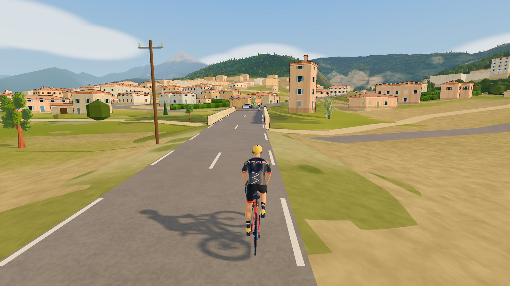
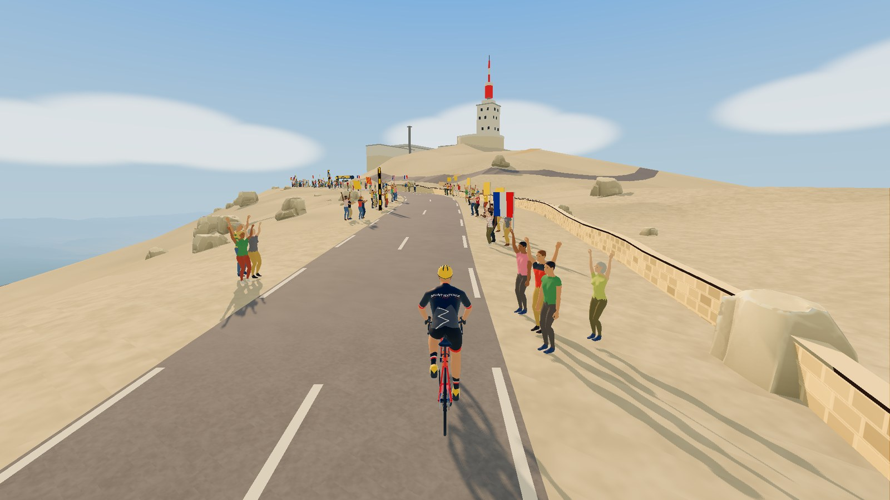
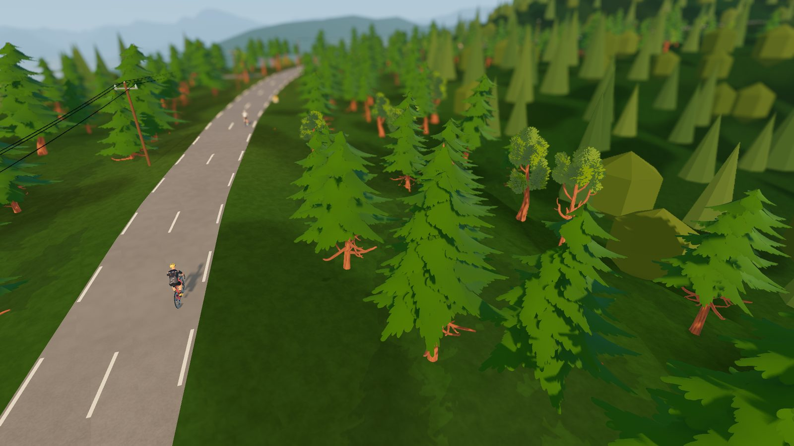

The north face. More irregular, wilder, with the steepest ramps of the Giant and the Mont Serein ski station halfway to the sky.
Each bar is one kilometre, coloured like the white and yellow roadside markers: green below 3%, yellow, orange, red, then dark red above 10%.

At the foot of the Dentelles, you leave Malaucène on the Groseau road. From the second kilometre, near the Notre-Dame-du-Groseau chapel, the gradient goes above 8%.

Pines and beeches alternate between flatter sections and ramps. Between km 11 and km 13 the road strings together three kilometres above 10%: the hardest section of the three sides.

The ski station appears around a bend, with its chalets and lifts. A short break before the final assault.

Above the trees, the road zigzags through the scree up to the observatory. The view plunges into the Toulourenc valley and, on a clear day, all the way to the Alps.


The royal road. The Tour de France route, the relentless forest and the desert of white stones. 21 kilometres from the vineyards to 1,912 metres.

The gentlest, the longest, the most fragrant. From the lavender fields of the Albion plateau to the scree at a steady pace… before six last kilometres that show no mercy.
 Mont Ventoux Online
Mont Ventoux Online